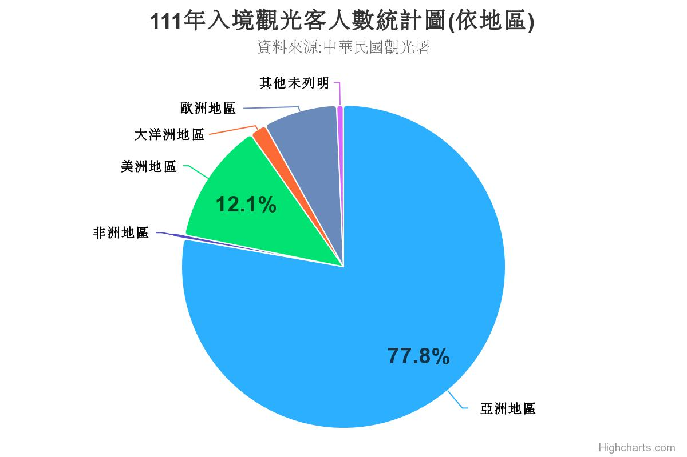

| 交通部觀光署觀光統計資料庫 | ||
|
2011年-2015年：穩步增長 從2011年到2015年，觀光客數呈現了穩步增長的趨勢，由6,087,484人次增至10,439,785人次。這一時期，台灣積極進行國際宣傳，提升了旅遊基礎設施，吸引了越來越多的國際遊客。 2016年-2018年：巔峰時刻 2016年至2018年間，觀光客數量達到了巔峰，尤其是在2018年，達到了11,066,707人次。政府的宣傳效果、旅遊業的服務水準提升，以及國際間對台灣的關注共同推動了觀光業的蓬勃發展。2019年-2022年：挑戰與因應 然而，2019年以來，全球爆發的COVID-19大流行給全球旅遊業帶來了極大的挑戰。2020年，觀光客數急劇下降至1,377,861人次，這是一個巨大的變數。儘管在2021年和2022年逐漸恢復，但整體數量仍然低於巔峰時期。政府積極因應，推動了一系列的防疫和振興措施，以維持觀光業的運轉。2022年觀光客數達到895,962人次，顯示出台灣在克服困難後，逐漸回歸正軌。 |

|
|
|  |
根據2022年的觀光統計數據，當年觀光客總數達到了10,739,601人次，台灣觀光業再次成為焦點，較前一年增長了約19%。這一數字表明，台灣在應對全球疫情的挑戰後，政府通過創新的宣傳活動，突顯了台灣豐富的文化、美食和風景。這些宣傳活動在國際上引起了極大的關注，激發了人們對台灣的興趣，成功地吸引了更多的國際遊客，運用科技創新提升旅遊體驗。智慧旅遊、虛擬導覽等數位技術的應用，使遊客能夠更深入地了解台灣的歷史、文化和自然風光，提高了旅遊的吸引力，重新注入了觀光業的活力。 |
|
| 網頁製作 翁子閔 2023 | ||